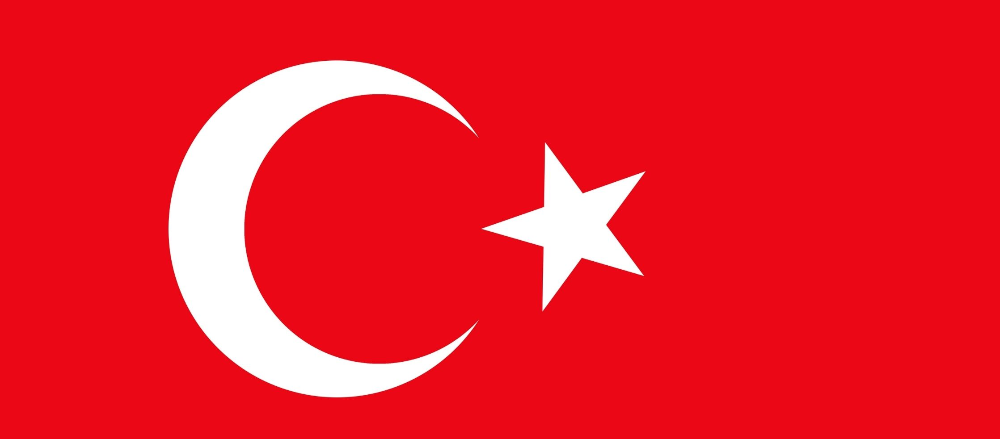

Türk Bayrağı
> 2994 Sayılı Türk Bayrağı Kanunu
29 Mayıs 1936
Türk Bayrağının Anlamı
Efsaneye göre bayraktaki al, kan kırmızısıdır ve şehitlerin dökülen kanlarını temsil eder. Gece yarısı bu kanların üzerine yansıyan hilâl biçimindeki ay ve bir yıldızla beraber Türk bayrağının görüntüsü oluşur. Bu efsanenin 1389 yılında meydana gelen I. Kosova Muharebesi'nde gerçekleştiği söylenmektedir.
Türk Bayrağının Tarihçesi
Osmanlı İmparatorluğu'ndan önceki Anadolu Türk devletlerinde kullanılan bayrak renk ve sembolleri hakkında yeterli bir bilgi yoktur. Türk bayrağı ilk olarak Anadolu Selçuklu hükümdarı II. Mesud tarafından Osman Bey'e gönderilen beyaz renkli sancak olarak görülür. 15. yüzyıldan sonra al bayrak I. Selim dönemindeki Çaldıran Muharebesi'nde ise yeşil bayrak kullanılmaya başlanmıştır.
Türk bayrağına en yakın şekle ise III. Selim döneminde rastlanır. Bu bayrakta hilal ile birlikte sekiz köşeli yıldız kullanılmıştır. Sekiz köşeli yıldız şekil bilimine göre zafer anlamı taşımaktadır. 1844 yılında Abdülmecid dönemindeki Tanzimat sürecinde bayraktaki yıldız beş köşeli şeklini almıştır. Beş köşeli yıldız insanı sembolize etmektedir.
Saltanatın kaldırılması üzerine 29 Mayıs 1936 tarihinde bayrağın şekli kesin bir şekilde tayin edilmiştir
Türk Bayrağı Boyutu
Türkiye Cumhuriyeti Bakanlar Kurulunun, 25 Ocak 1985 tarih ve 85/9034 numaralı "Türk Bayrağı Tüzüğü" kararının 4. maddesinde, bayrağın boyutları belirlenmiştir.
Tüzüğe göre yapılacak olan bir Türk Bayrağı, al zemin üzerine beyaz renkte ay ve yıldızdan oluşmaktadır. Bayrağın boyu, genişliğinin 1,5 katıdır. Ay ve yıldızı meydana getirecek olan dairelerin merkezleri, bayrağın enine katlanması sırasında oluşacak eksenin üzerinde olmalıdır. Ayın dış dairesinin çapı, bayrak genişliğinin yarısına eşit olmalıdır. Bayrağın ip takılacak olan ve beyaz kumaştan yapılan uçkurluk bölümü ile ayın dış dairesinin merkezi arasındaki uzaklığı bayrak genişliğinin yarısına eşit olmalıdır. Ayın iç dairesinin çapı, bayrak genişliğinin 4/10’u kadardır. Ayrıca iç daire merkezi ile dış daire merkezi arasındaki uzaklık bayrak genişliğinin 1/16’sı olmalıdır. Yıldızı çizecek olan dairenin çapı, bayrak genişliğinin 1/4’üne eşit olmalıdır. Uçkurluğun genişliği ise bayrak genişliğinin 1/30’u kadar ölçülür.

Türk Bayrağı Renk Kodları
Türk bayrağının kırmızı rengi, RGB renk modelinde %89 kırmızı, %3.9 yeşil ve %9 mavi (onaltılık renk kodu #E30A17) ile oluşur. CMYK renk modelinde ise %0 siyan, %95.6 magenta, %89.9 sarı ve %11 siyah olarak oluşur. Bu renk, 356.4 derece hue açısı, %91.6 doygunluk ve %46.5 açıklık değerlerine sahiptir. Türk bayrağındaki kırmızı renk (Al olarak da tanımlanır.) canlı tonlarda bir kırmızıdır ve bu renk, #FF142E ile #C70000 renklerinin karıştırılmasıyla elde edilebilir. En yakın web rengi #d11919 koduyla yer alır.
....